Three approved rules, drawn on the event roster. R3-10 (v1.047 (15)): one order above every roster, the possible-duplicate box first, then the count cards. R3-02 (v1.046 (8), as Black Belt): a row marked “Possible duplicate” stays out of Paid and Not paid until the pair is resolved; Students still counts it and Payments recorded keeps any money; one gray line under the cards says so (words to approve below). R2-03 (v1.043, Star’s G3): restoring a “Duplicate copy” says “Mia Lopez restored” with no Undo (an Undo would put the row back as a plain Removed with a history that says Withdrawn; to change it back an admin uses Review → Keep this one again). Every other restore keeps its 5-second Undo. The After column is drawn on top of the real preview page.
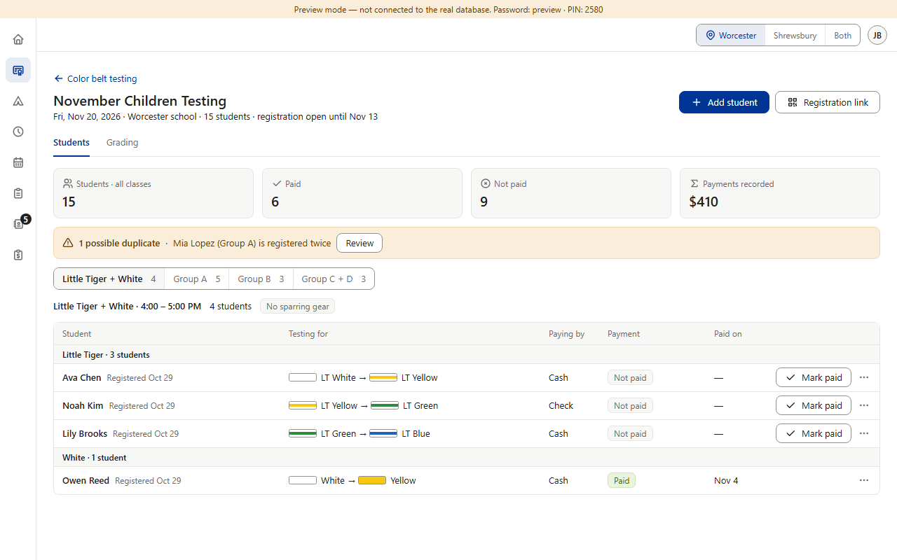
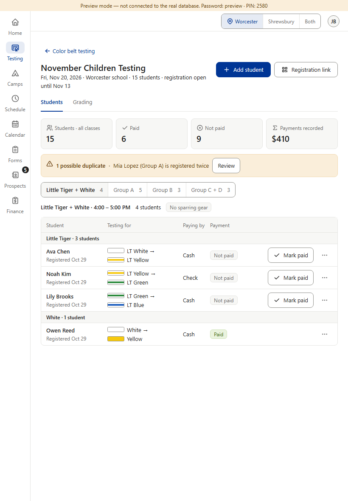
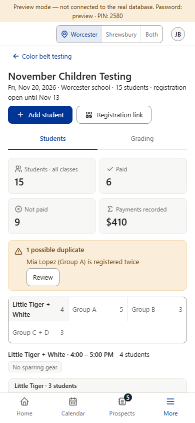
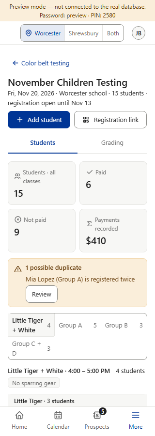
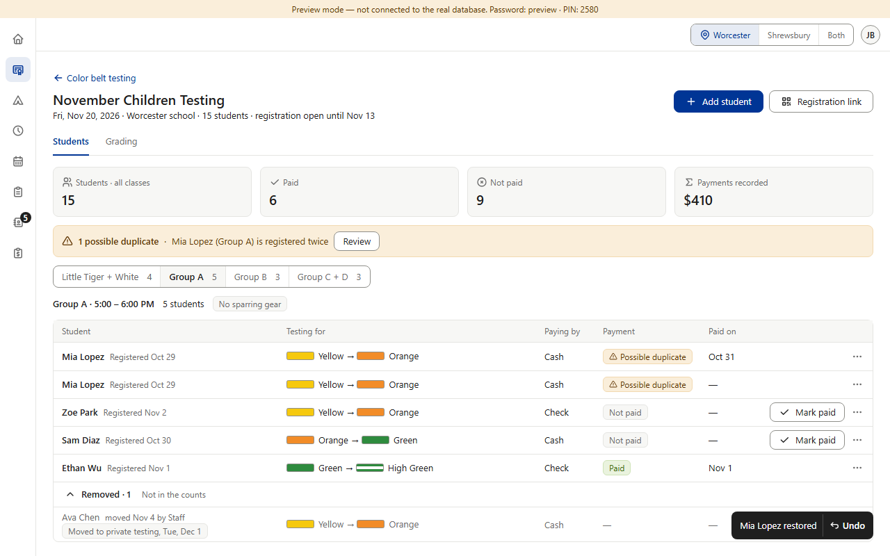
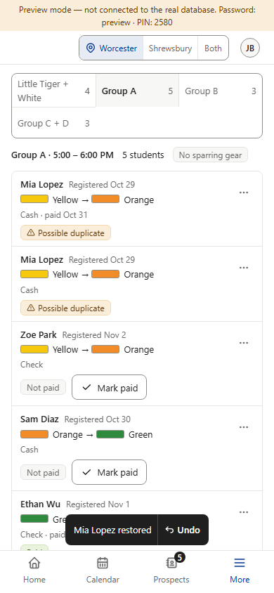
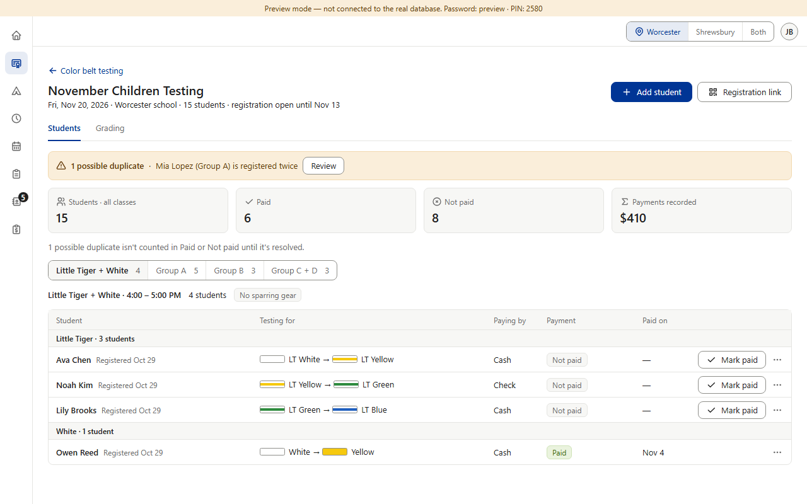
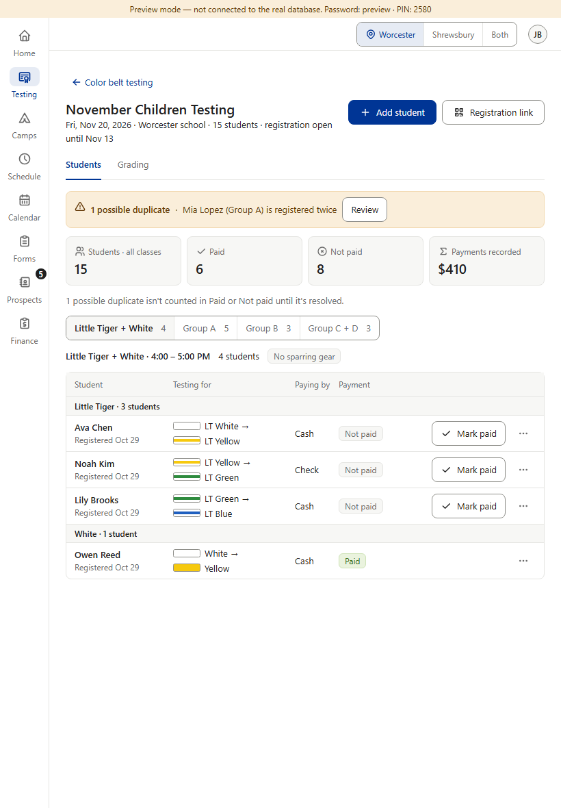
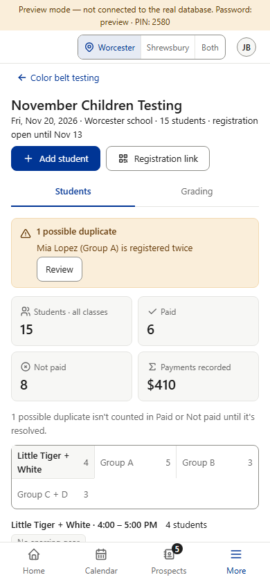
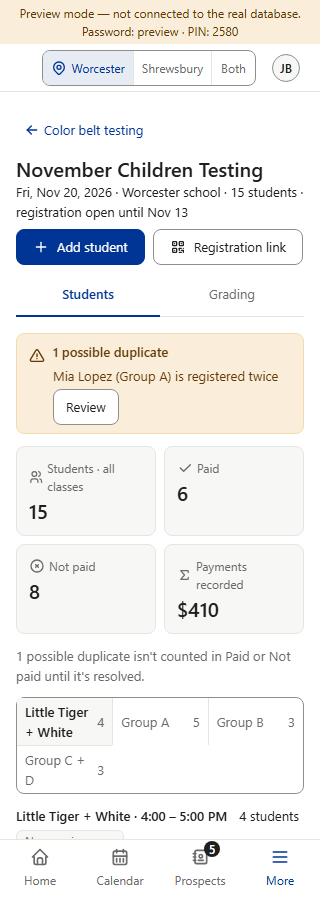
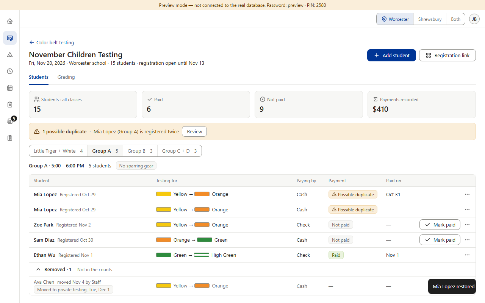
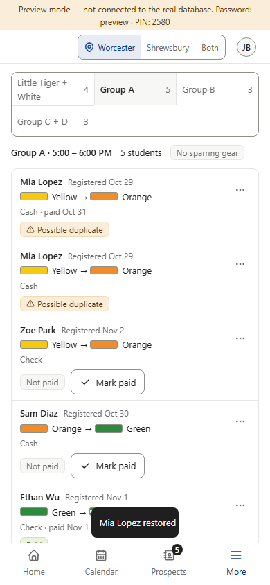